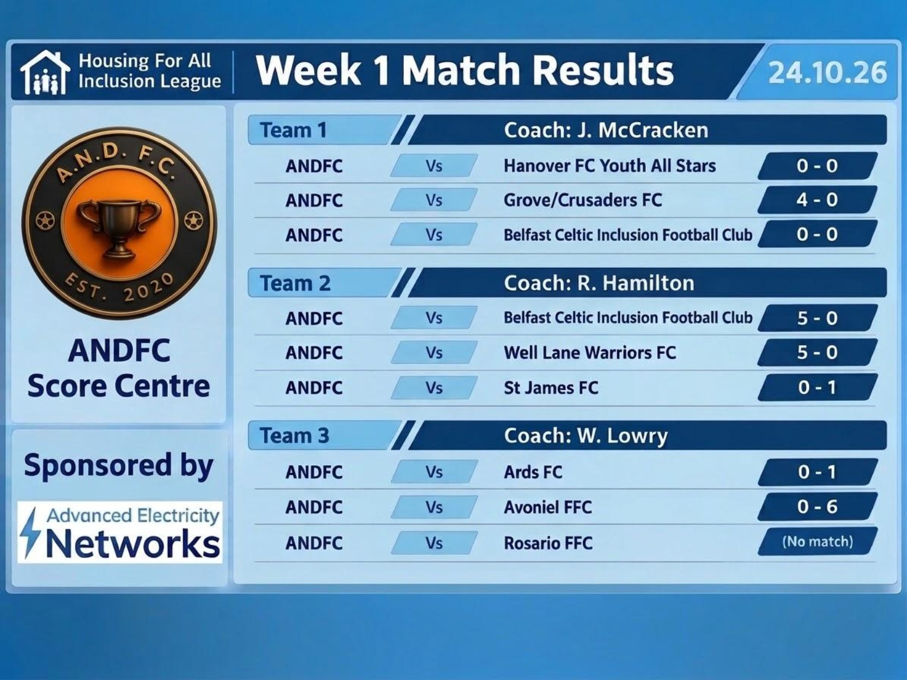

Next senior matchday
23 January 2027
FixturesInclusive football, friendship and opportunity for everyone at Antrim Newtownabbey Disability FC.
23 January 2027
FixturesWednesday at V36
Training timesResults and statistics for all three senior teams.
Open match report centreFounded in August 2020, Antrim Newtownabbey Disability FC is a mixed-gender inclusive football club. We welcome players of different abilities and backgrounds, building confidence, friendships and a sense of belonging through football.
Members: confirm training or match availability Register your interest
AND FC founded with eight senior players.
Junior football introduced.
Irish FA Grassroots national award winner.
Irish FA Grassroots regional award winner.
Women's senior team formed.
Planned Stirling trip. Follow fundraising progress.
New players and volunteers are welcome. Please contact us before attending for the first time.
Ages 7–16 especially welcome. No experience needed — make friends, get active and enjoy football.
Join AND FCHousing For All Inclusion League — AND FC Eagles, Hawks and Cubs.
Opponents, kick-off times and venue to be confirmed.


Eagles, Hawks and Cubs — celebrate our players, coaches and achievements.
Teams & ProfilesRecorded goalscorers for Eagles, Hawks and Cubs.
View Player statisticsWeekly leaderboard and prize pot.
View Top Bins ChallengeTrip savings targets and fundraising progress.
View Stirling 2027 trackerFollow our matchday photos, training updates and club news.
Load the Facebook preview to connect to Facebook. Cookies may be used by Facebook.
Training, upcoming meetings, fundraising and future plans.
View club calendarWe're more than a football club. Our activities promote inclusion, respect, volunteering and wellbeing, including Kicking Off Conversations.
Thank you to the organisations helping us make inclusive football possible.
Make a difference through inclusive football. Individuals, families and businesses can support an AND FC player for the season.
Your sponsorship helps support training facilities, equipment, competition costs and player development.
Contact the club to discuss player availability and arrange your sponsorship. Player names, photographs and publicity are subject to appropriate consent.
Browse official club clothing and merchandise through Empire Kits. Purchases, sizing, payments and delivery are handled by the supplier.
Visit the club shop ↗Find guidance on raising concerns, respect, online safety and independent support.
Safeguarding & welfareFind the Irish FA, disability sport organisations, safeguarding guidance and community funding resources.
Explore useful linksInterested in playing, coaching, volunteering or sponsoring AND FC? We'd love to hear from you.
Email: antrimnewtownabbeydisabilityfc@gmail.com
Registered charity NIC109278